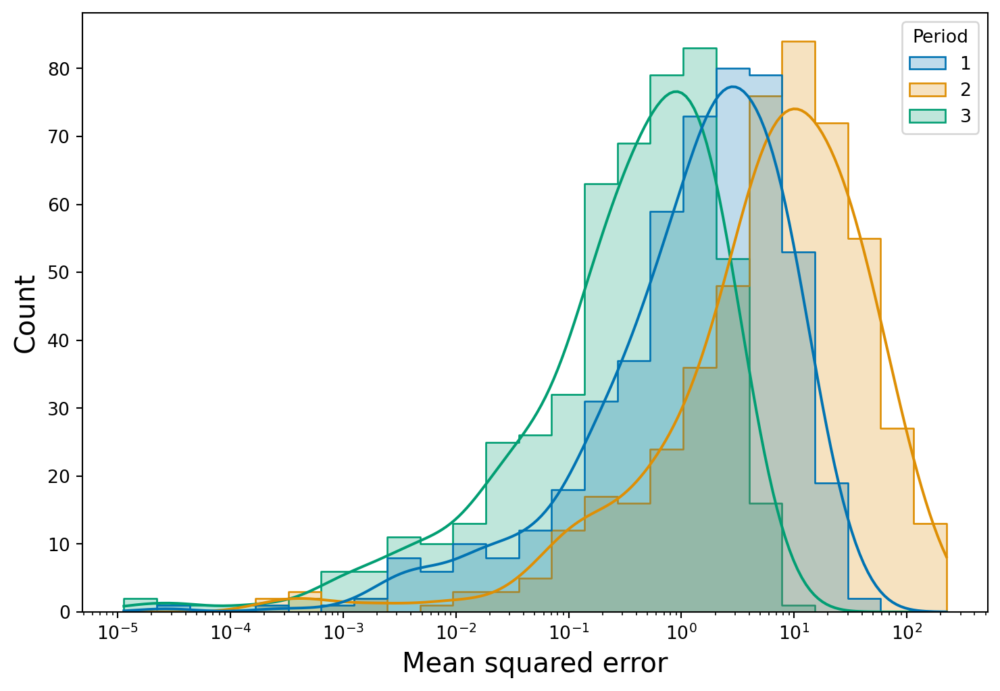

Code
import numpy as np
import pandas as pd
import seaborn as sns
import matplotlib.pyplot as plt
import statsmodels.api as sm
np.random.seed(299)
sns.color_palette('colorblind')
nsample1 = 2000
nsample2 = 500
nsample3 = 500
# period 1
x1 = np.random.normal(size=nsample1)
beta1 = 4
e1 = np.random.normal(size=nsample1, scale=2)
y1 = np.dot(x1, beta1) + e1
# development and holdout data
x1tr = x1[:1500]
x1te = x1[1500:]
y1tr = y1[:1500]
y1te = y1[1500:]
# period 2
x2 = np.random.normal(size=nsample2)
beta2 = 8
e2 = np.random.normal(size=nsample2, scale=2)
y2 = np.dot(x2, beta2) + e2
# period 3
x3 = np.random.normal(size=nsample3)
beta3 = 4
e3 = np.random.normal(size=nsample3, scale=1)
y3 = np.dot(x3, beta3) + e3
# collection of targets
y_list = [y1te, y2, y3]
# fit model
model = sm.OLS(y1tr, x1tr)
results = model.fit()
# predict values
pred1 = results.predict(x1te)
pred2 = results.predict(x2)
pred3 = results.predict(x3)
# list of predictions
pred_list = [pred1, pred2, pred3]
# calculate mean squared errors
errs = {}
for i in range(3):
errs[i+1] = [(i-j)**2 for (i,j) in zip(pred_list[i], y_list[i])]
# convert to dataframe
df_from_dict = pd.DataFrame.from_dict(errs, orient='index').T
df_melt = pd.melt(df_from_dict.reset_index(), id_vars=['index'])
df = df_melt[['variable', 'value']]
df = df.rename(columns={'variable': 'Period', 'value': 'Mean squared error'})
# create figure
plt.figure(figsize=(9, 6))
fig = sns.histplot(x="Mean squared error",
data=df,
bins=25,
hue="Period",
kde=True,
log_scale=True,
element="step",
palette='colorblind')
# change label and tick size
fig.set_xlabel("Mean squared error",fontsize=15)
fig.set_ylabel("Count",fontsize=15)
fig.tick_params(labelsize=10)
plt.show()